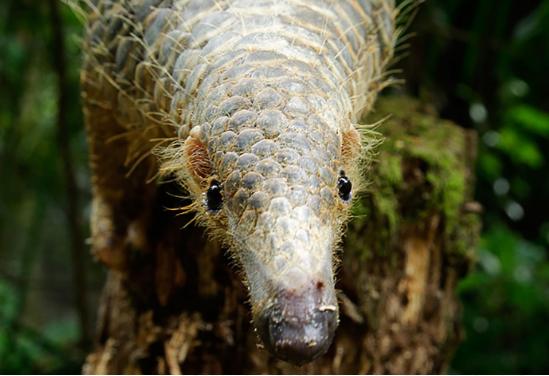

Pulau Tekong, generally referred to as Tekong, is the largest of Singapore's many offshore islands that surround the main island. It is situated off the northeastern coast of the mainland, with Selat Johore to the north and Serangoon Harbour to the south. There were originally two islands – the larger Pulau Tekong and the smaller Pulau Tekong Kechil - but land reclamation joined them as one, making the resulting island the largest in Singapore. In 1957, Pulau Tekong had a population of around 4,169. The residents were predominantly Chinese, although the Malays are believed to be the earliest settlers on the island. Among its produce then were rubber, coconut, vegetables, prawns, fish, and tropical fruits such as durians, mangosteens and rambutans. The island was once home to many villages but all islanders have since been resettled on mainland Singapore. Today, Pulau Tekong has been refurbished and is now dedicated to giving young adults an eventful lifetime experience regardless of race, religion or gender.

The all-expenses-paid trip to Pulau Tekong comes in a few different packages; the main difference being the time of stay which ranges from 9 to 17 weeks depending on your allocated package. Nonetheless, all activities on the island are available to all package holders. Food and lodging are provided free of charge with wake-up call services operating at 5am and meals being served three times a day.
Day to day activities include free fitness programs, swimming, camping under stars, and drill choreography. Singaporeans on the island will have the opportunity to utilise the various facilities such as the swimming pools, jungle gym obstacle course, and shooting ranges at certain points throughout their stay on the island.
Singaporeans will be able to enjoy the seclusion that Tekong offers from the bustling city life of the mainland. Without much light pollution from the streets and skyscrapers of CBD, those on the island can look forward to camping under the starlit skies. Additionally, there are plenty of animals to be seen such as wild boars, leopard cats, monkeys, snakes, and pangolins.
1) In order for Singaporeans to reach the island, they must take the ferry from the SAF Changi Ferry Terminal; Journey by ferry takes approximately 15 to 25 minutes depending on tidal conditions and visibility:
2) Sample of the delicious food served on the island:
3) Daily group physical activity and exercise: